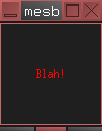

|
|
|
News Faq Documentation Downloading Compiling Hello World Todo Contact Download Links Contact |
DocumentationClick here for the current Doxygen documentationHere is the current rough developer's Roadmap. Here is the source code page on github. Downloading
You can download the current allegedly Stable Release (0.0.8) here. You may browse all the downloadable release files here. Otherwise, you can grab the current development version from the repository: git clone http://github.com/tomlechner/laxkit.git laxkit-gitOr you can browse the repository here. The Laxkit is licensed under the LGPL. That I know of, there are currently exactly 3 downloadable programs using the Laxkit. One is Liv, a rudimentary image viewer, roughly in the spirit of the Feh image viewer. This is only available from svn, via this command: svn co https://laxkit.svn.sourceforge.net/svnroot/laxkit/liv/trunk livAnother is Laxinput, which lets you easily set up multiple independent mice and keyboards. This is currently included in the main Laxkit library code. The other is desktop publishing software called Laidout, which has been the driving force behind my making the Laxkit. Compiling the Library
The Laxkit depends on: - libpngOn a debian based system, you could type this command as root (or on ubuntu preface this with "sudo") to get them all: apt-get install g++ libcairo2-dev libpng12-dev libx11-dev libxi-dev libcups2-dev libimlib2-dev libxft-dev libfontconfig-dev libfreetype-dev libssl-devAll of these are usually available for all major linux distributions. When you're sure you have those things installed, just type: ./configure make make install By default, this will cause liblaxkit.a, and liblaxinterfaces.a to be put in /usr/local/lib, and the header files will be put in /usr/local/include/lax-(whatever.version). If you type ./configure --prefix=/your/own/install/path, then the laxkit will get installed in prefix/include, prefix/share/doc, prefix/lib, etc. What files were installed are put into the file install.log. This library currently is being developed on a Debian "unstable" Linux machine, but it has few dependencies at the moment, and should be relatively easy to get to compile on most Unix like systems. It works on my machine as they say. I am not aware of any one else in the universe using the Laxkit, so it will likely have lots of bugs that I've inadvertently learned to not activate. I only have a Linux machine and very little experience with other platforms, and I would very much like to hear of success/failure/accusations/insults/patches from attempts to compile on other platforms. Laxkit Hello World
Here is a very simple Laxkit program.
#include <lax/mesbar.h>
using namespace Laxkit;
int main(int argc,char **argv)
{
anXApp app;
app.init(argc,argv);
app.addwindow(new MessageBar(NULL,"mesbar","mesbar",MB_MOVE, 5,5,100,100,0, "Blah!"));
app.run();
return 0;
}
You would compile it something like this: g++ laxhello.cc -I/usr/include/freetype2 -L/usr/X11R6/lib \ -lX11 -lm -lcairo -lpng -lcups `imlib2-config --libs` -lXi -lXft -lcrypto \ -llaxkit -o laxhello It produces the following window:  Note that this is the simplest case! If you use everything, including images and the interface classes, your compile line would look more like: g++ laxhello.cc -I/usr/include/freetype2 -L/usr/X11R6/lib \ -lX11 -lm -lcairo -lpng -lcups `imlib2-config --libs` -lXi -lXft -lcrypto \ -llaxinterfaces -llaxkit -o laxhello ~~ TODO ~~
Coding. I've already programmed something more or less working for about 85% of my planned
widgets and interfaces. This existing code needs lots of cleanup.
The most important goal is support for left-right, right-left and mixed fonts, and a good font dialog,
which I should have done at about the 10% mark.
The doxygen documentation has a more extensive list of coding todo. Contacting
If you have complaints and/or contributions as to how to streamline my dilettante code, please let me know. I'm sure there are a lot of little programming tricks and window manager pitfalls I haven't a clue about. "Chuck all this, and switch to Fltk or Gtkmm" is probably very good advice to me, but I don't want to hear it (but try again in one more year). Please help develop! I'd rather be drawing cartoons. Here is the person to complain to: Tom Lechner |
|
|